Activating project at `~/Consulting/LakelandAppliedSciLLC/CriminologyGuns`
277 rows × 17 columns (omitted printing of 15 columns)
Location
City
String
String31
1
Edgewater Technology Inc
Wakefield
2
Amko Trading Store
Houston
3
Navistar International Corp.
Melrose Park
4
Santana High School
Santee
5
Granite Hills High School
El Cajon
6
Laidlaw Transit Services Maintenance Yard
San Jose
7
Nu-Wood Decorative Millwork Plant
Goshen
8
Appalachian School Of Law
Grundy
9
Bertrand Products Inc
South Bend
10
Tom Bradley International Terminal at LAX
Los Angeles
11
18 Miles of US Route 64 from Sallisaw to Roland, OK
Sallisaw
12
Labor Ready, Inc
Huntsville
13
Red Lion Junior High School
Red Lion
14
Case Western Reserve University, Weatherhead School of Management
Cleveland
15
Modine Manufacturing Company
Jefferson City
16
Lockheed Martin Subassembly Plant
Meridian
17
Kanawha County Board of Education
Charleston
18
Gold Leaf Nursery
Boynton Beach
19
Andover Industries
Andover
20
Windy City Cor Supply Inc
Chicago
21
Rocori High School
Cold Spring
22
Watkins Motor Lines
West Chester
23
Columbia High School
East Greenbush
24
ConAgra Plant
Kansas City
25
Radio Shack in Gateway Mall
St Petersburg
26
Private Property Near Meteor, Wisconsin
Meteor
27
DaimlerChrysler’s Toledo North Assembly Plant
Toledo
28
Best Buy in Hudson Valley Mall
Kingston
29
Living Church of God
Brookfield
30
Red Lake High School and Residence
Red Lake
⋮
⋮
⋮
The above data set was hand transcribed from the FBI PDF files available in the data directory. The original is the .ods spreadsheet file. The csv is exported from there. Please report any transcription errors you detect!
There are a variety of interesting summaries of the data. By grouping by month in sdatamon we can look at cumulative totals, rates of change, split by types etc.
For example, we can compare how many people were killed with each type of weapon.
p =@df sdatamon plot(map(yearmon2date,:yearmon),cumsum(:HGKilled),label="Handguns",legend=:topleft,title="Killings via Various Armaments")@df sdatamon plot!(map(yearmon2date,:yearmon),cumsum(:MixedKilled),label="Mixed")@df sdatamon plot!(map(yearmon2date,:yearmon),cumsum(:RifleKilled),label="Rifles")@df sdatamon plot!(map(yearmon2date,:yearmon),cumsum(:ShotgunKilled),label="Shotguns")display(p)
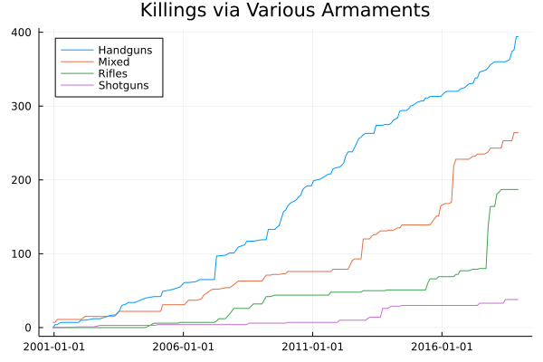
Another interesting question is how does the motivation/type of event break down. We see that while a steady stream of disgruntled workers, students, and ex-husbands commit murder at an approximately constant rate, there has been a much more serious exponential type rise in public shooting deaths over the timeperiod.
p =@df sdatamon plot(map(yearmon2date,:yearmon),cumsum(:DWDeaths),label="Disgruntled Worker Deaths",legend=:topleft,title="Killings by Motivation/Type",ylab="Cumulative Deaths")@df sdatamon plot!(map(yearmon2date,:yearmon),cumsum(:DSDeaths),label="Disgruntled Student Deaths")@df sdatamon plot!(map(yearmon2date,:yearmon),cumsum(:RelDeaths),label="Relationship Deaths")@df sdatamon plot!(map(yearmon2date,:yearmon),cumsum(:PubShoots),label="Public Shootings")display(p)p =@df sdatamon plot(map(yearmon2date,:yearmon),cumsum(:PubShootsHG),label="Handgun Only Public Killings",legend=:topleft,title="Public Killings by Weapon",ylab="Cumulative Deaths")p =@df sdatamon plot!(map(yearmon2date,:yearmon),cumsum(:PubShootsRi),label="Rifle+ Public Killings")display(p)p =@df sdatamon plot(map(x ->Date.(x[1],x[2],15),:yearmon),log.(cumsum(:PubShoots)),title="log(Public Shootings)",legend=false)display(p)
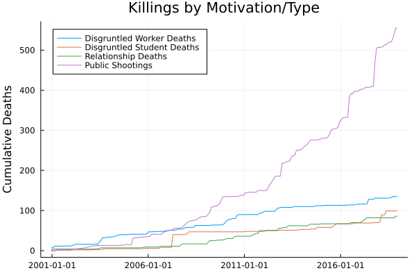
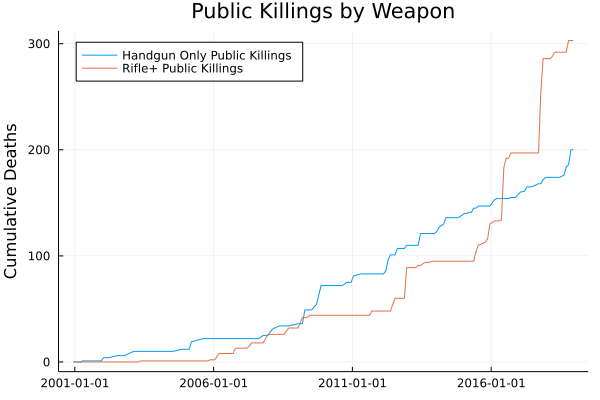
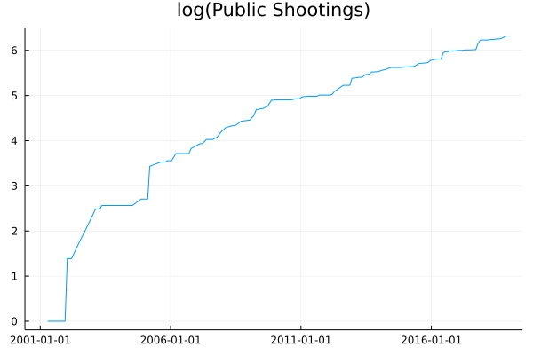
The exponential growth is not just exponential growth in victim count, but actually shows near exponential growth in event count, with Handgun only events making up a nearly constant 60% or so of all events.
p =@df sdatamon plot(map(yearmon2date,:yearmon),cumsum(:ShootCountAll),label="All Events",title="Cumulative Event Count",legend=:topleft)@df sdatamon plot!(map(yearmon2date,:yearmon),cumsum(:ShootCountHG),label="Handgun Events")display(p)p =@df sdatamon plot(map(yearmon2date,:yearmon),log.(cumsum(:ShootCountAll)),label="All Events",title="log(Cumulative Event Count)",legend=:topleft)@df sdatamon plot!(map(yearmon2date,:yearmon),log.(cumsum(:ShootCountHG)),label="Handgun Events")display(p)p =@df sdatamon plot(map(yearmon2date,:yearmon),cumsum(:ShootCountHG) ./cumsum(:ShootCountAll),label="Fraction Handgun",title="Fraction of Events that are Handgun Only",legend=false)display(p)
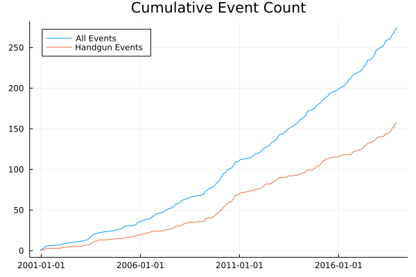
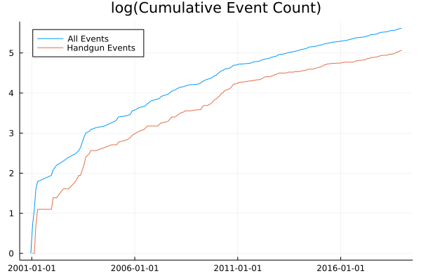
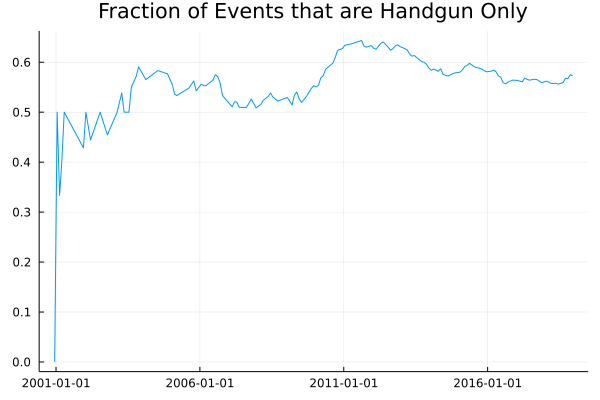
Where do events occur?
Although School shootings get the most press, in fact most active shooter events take place at commerce locations such as malls, big box stores, restaurants, and similar.
p =@df sdatamon plot(map(yearmon2date,:yearmon),cumsum(:CommDeaths),label="Commerce",legend=:topleft,title="Killings by Location")@df sdatamon plot!(map(yearmon2date,:yearmon),cumsum(:EdDeaths),label="Education")@df sdatamon plot!(map(yearmon2date,:yearmon),cumsum(:GovDeaths),label="Government")display(p)
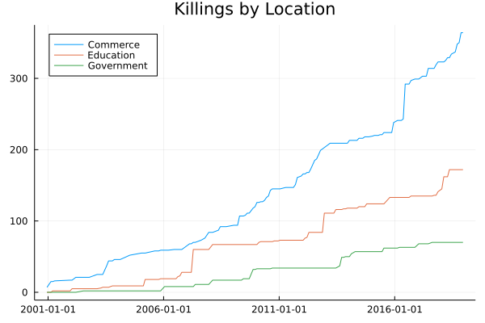
Thankfully, most events involve less than 10 people dead. And there are not obvious differences in the distribution of deaths by firearm type. The three highest death count events are the Las Vegas shooting at the Harvest music festival (58 dead), the Orlando Nightclub Shooting (49 dead), and the Virginia Tech shooting (32 dead). The Las Vegas shooting involved many weapons but principally semi-automatic rifles, the Orlando shooter was armed with both a semi-automatic rifle and a semi-automatic pistol, and the Virginia Tech shooter was armed with 9mm and 22LR handguns. Although the extreme events get the most attention, in the bulk of the distribution, there are not clear reasons to think that one or another type of firearm conveys an advantage to the shooter.
p =histogram(sdata.NKilled,bins=-0.5:1.0:75.5,title="Deaths Per Incident")display(p)p =histogram(@subset(sdata,:NRifle .>0).NKilled,bins=-0.5:1.0:75.5,title="Deaths Per Incident",label="Had Rifle",alpha=0.25,normalize=true)histogram!(@subset(sdata,:NHandgun .>0).NKilled,bins=-0.5:1.0:75.5,title="Deaths Per Incident",label="Had Handgun",alpha=0.25,normalize=true)histogram!(@subset(sdata,:NShotgun .>0).NKilled,bins=-0.5:1.0:75.5,title="Deaths Per Incident",label="Had Shotgun",alpha=0.25,normalize=true)display(p)p =histogram(@subset(sdata,:NRifle .>0).NKilled,bins=-0.5:1.0:75.5,title="Deaths Per Incident",label="Had Rifle",alpha=0.25,normalize=true,xlim=(0,20))histogram!(@subset(sdata,:NHandgun .>0).NKilled,bins=-0.5:1.0:75.5,title="Deaths Per Incident",label="Had Handgun",alpha=0.25,normalize=true)histogram!(@subset(sdata,:NShotgun .>0).NKilled,bins=-0.5:1.0:75.5,title="Deaths Per Incident",label="Had Shotgun",alpha=0.25,normalize=true)display(p)
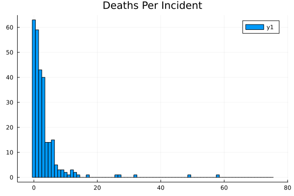
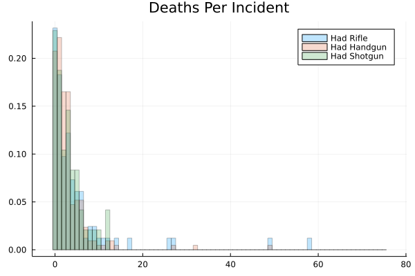
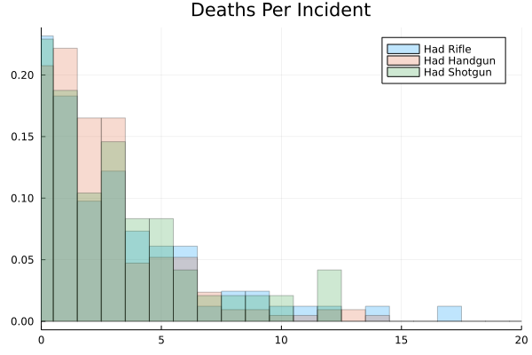
How many people are killed or injured typically?
Looking at cumulative distribution functions, the vast majority of events involve fewer people killed or injured than can be generated with one of the most commonly owned firearms for example the Glock 17 handgun with two 17 round magazines.
p =@df sdata plot(ecdf(:NKilled),legend=false,title="ECDF of Death Count")display(p)p =@df sdata plot(ecdf(:NInjured),legend=false,title="ECDF of Injured Count",xlim=(0,100))display(p)ee =@df sdata ecdf(:NKilled .+:NInjured)p =plot(ee,legend=false,title="ECDF of Killed+Injured Count",xlim=(0,100),label="Total Killed + Injured")plot!([17*2.0,17*2.0],[0.0,1.0],label="Glock + 2 Standard Magazines",legend=:bottomright)annotate!(17*2+1,ee(17*2) -.1,text("$(round(ee(17.2)*100))% less than $(17*2) casualties",8,halign=:left))display(p)
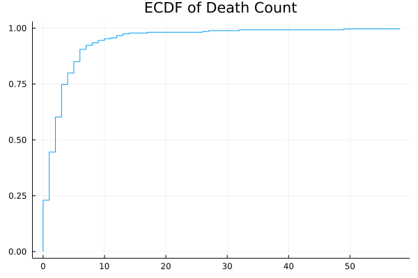
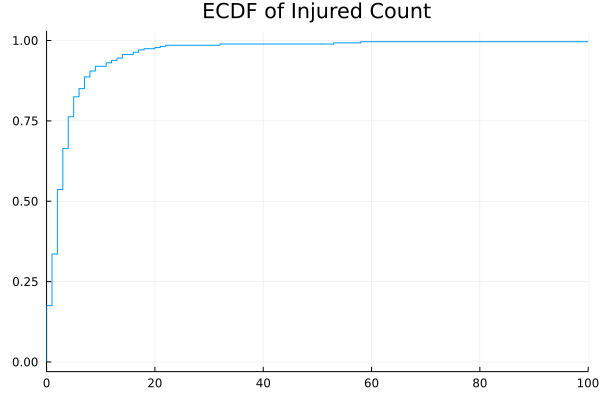
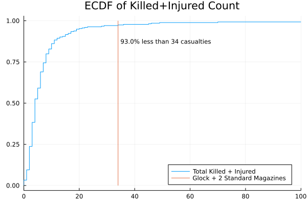
What could cause exponential growth in public shootings?
Evidently we have near exponential growth in public shootings. What are some hypotheses about why that might be?
One way to get exponential growth is via “contagion”. By now most people are familiar with “viral videos” or re-tweets or the basic reproduction number of COVID. In this mechanism whenever one person commits an event, it convinces on average a little more than 1 more person to commit an event within the next short time period. This is sometimes called “Mass Shooting Contagion”.
Although there can be no question that some of these events are motivated by desire for fame and to be like previous perpetrators (we know this due to investigations into the actions of mass shooters leading up to their event), it seems unlikely to be the sole effect leading to exponential type increases. In particular, many of the events do not involve the choice of a particularly notable location, nor do they involve apparent planning for notariety. For example the following three events transcribed from the FBI list which are somewhat “typical” and do not indicate the grandiose plans similar to the Columbine, Virginia Tech, Sandy Hook, or Las Vegas Festival events.
Economic Motives
Although individual
ginidat = CSV.read("data/API_SI.POV.GINI_DS2_en_csv_v2_4333947.csv",DataFrame; skipto=6, header=5)ginidat = ginidat[:,1:end-1] # drop meaningless final columnrename!(ginidat,Dict(Symbol("Country Name") =>:Country, Symbol("Country Code") =>:countrycode, Symbol("Indicator Name") =>:indicator, Symbol("Indicator Code") =>:indicatorcode))ginistack = DataFramesMeta.stack(ginidat,Not([:Country, :countrycode,:indicator,:indicatorcode]))rename!(ginistack,Dict("variable"=>"Year", "value"=>"ginicoef"))ginistack.Year =tryparse.(Int64,ginistack.Year)usgini =@subset(ginistack,:countrycode .=="USA")ginishootmon =@orderby(leftjoin(sdatamon,usgini, on =:Year),:yearmon)@df ginishootmon scatter(:ginicoef,log.(cumsum(:PubShoots)),title="Public Shootings vs Gini")
How do suicides track active shootings
Many active shootings are explicitly a form of suicide. The shooter has no intention of surviving, and intends to lash out as their last action. If this is true, then perhaps the things that drive mass shootings also drive suicide increases of other forms? Also, mass shootings are overwhelmingly committed by male perpetrators, so we will look at male suicide rates.